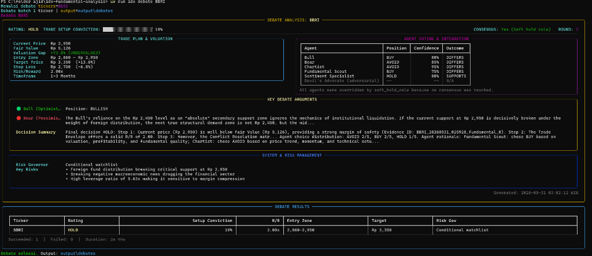

Quantitative candidate intake
Ranks the IDX universe with valuation gap, Piotroski F-Score, momentum, liquidity, ex-date risk, and sector-aware constraints.
Open source / MIT license / IDX research system
A portfolio case study for an institutional-style swing-trade pipeline: quantitative screening, LangGraph debate, CIO verdicts, risk gates, and audit-ready outputs for Indonesian stocks.
What it is
The project automates the path from raw IDX candidates to reviewable trade decisions. It is designed to surface disagreement, protect capital with guardrails, and leave enough evidence behind to audit each conclusion.
Ranks the IDX universe with valuation gap, Piotroski F-Score, momentum, liquidity, ex-date risk, and sector-aware constraints.
Fundamental, chart, sentiment, bull, bear, and CIO roles challenge one another before a verdict is accepted.
Every batch produces JSON, Markdown, debate history, audit logs, and risk-governor fields for post-run review.
Quick start
The portfolio mirrors the real workflow: install the project, run the batch engine, then review the generated JSON and Markdown evidence.
irm https://raw.githubusercontent.com/naufalhajid/IDX-Debate-Engine/main/install.ps1 | iexuv run idx pipelineuv run idx pipeline --dry-run --no-interactive --output-dir tmp/dry_run
Architecture
The core engine separates screening, evidence building, debate orchestration, verdict validation, risk sizing, and presentation.
IDX, yfinance, StockBit, sector cache, price history, ex-date metadata.
Composite ranking with valuation, quality, trend, liquidity, and risk penalties.
Freshness-aware evidence briefs keep the debate grounded and token-bounded.
Specialized agents debate up to three rounds with anti-groupthink pressure.
Pydantic-validated rating, confidence, entry range, stop loss, and target price.
CLI reports, FastAPI, Svelte dashboard, JSON artifacts, and audit logs.
Latest artifact snapshot
The latest batch reviewed 10 candidates and chose capital protection over forced BUY signals. Every HOLD, AVOID, and SKIP TICKER verdict stays traceable through JSON, Markdown, and audit artifacts.
10 candidates reviewed. The system preserved watchlist context, but risk gates and debate consensus did not approve a high-conviction entry.
What the portfolio should communicate
Batch CLI, API, dashboard, model routing, budget limits, and artifacts are treated as one workflow.
Schema validation, retry paths, debate state, evidence ranking, and CIO rules reduce free-form model drift.
Risk/reward thresholds, ex-date gating, stop-loss math, position sizing, and no-trade outcomes are explicit.
FastAPI streams debate events to a Svelte dashboard with candidates, timelines, health, and notifications.